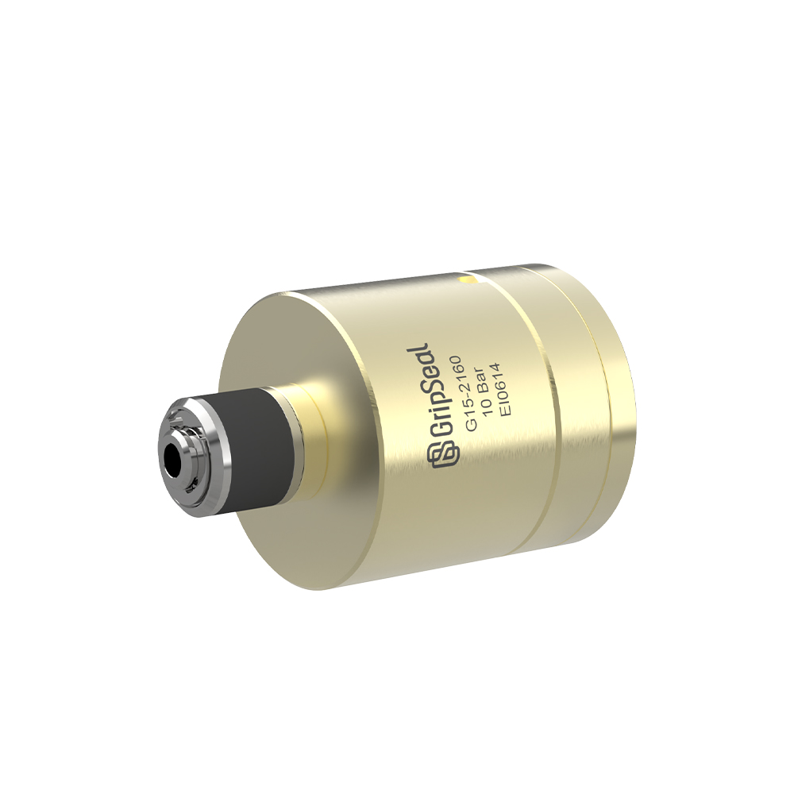
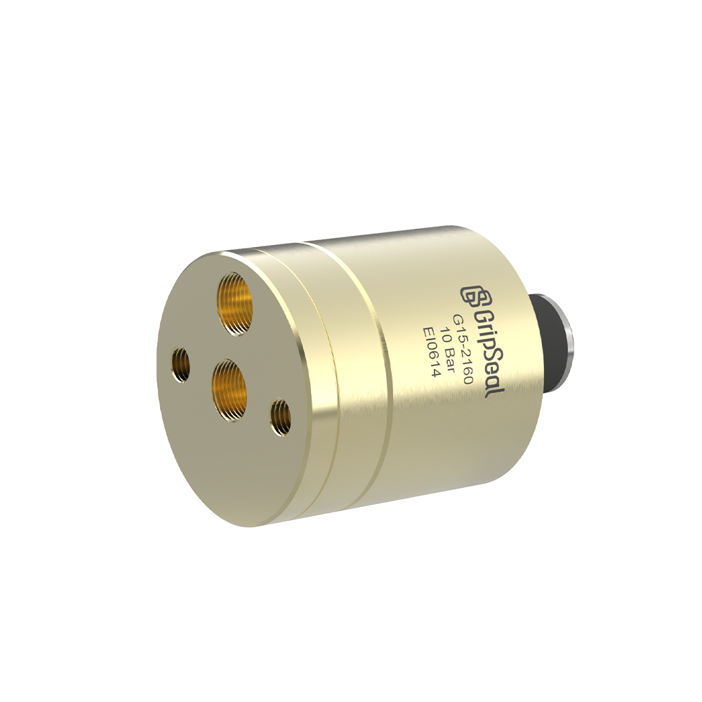

Model Overview
Quick Sealing for Fuel Pipe Interfaces
For automotive fuel pipe sealing where repeatability, line speed, and pipe-end protection are important.
Quick Facts
Request G15 Selection HelpTypical Use Direction
Use this route when the project starts from automotive fuel lines, fuel pipe leak tests, and repeated production fixtures.